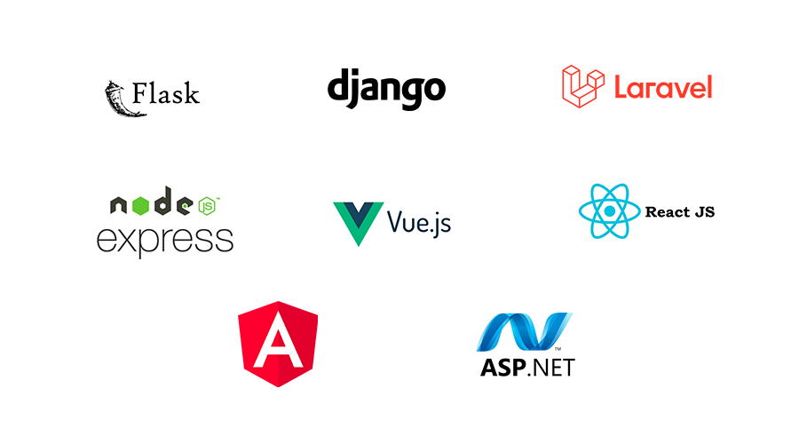

Frameworks
En el ámbito de la programación, un framework es un conjunto de herramientas, bibliotecas y componentes predefinidos que proporcionan una estructura para desarrollar aplicaciones de software. Estos frameworks permiten agilizar y simplificar el proceso de desarrollo al proporcionar un esqueleto o estructura básica sobre la cual se pueden construir aplicaciones.
Los frameworks son ampliamente utilizados en la industria del desarrollo de software debido a los beneficios que ofrecen, como la reutilización de código, la rapidez en el desarrollo y la adhesión a las mejores prácticas. Sin embargo, es importante tener en cuenta que cada framework tiene sus propias características y enfoques, por lo que es recomendable evaluar las necesidades del proyecto antes de elegir uno.
Selecciona un framework de la imagen para saber a profundidad
Ventajas
| Productividad | |
|---|---|
| Los frameworks ofrecen una estructura y conjunto de herramientas predefinidas que permiten acelerar el desarrollo de aplicaciones. Proporcionan funcionalidades comunes y soluciones a problemas recurrentes, lo que permite a los desarrolladores concentrarse en las características específicas de la aplicación en lugar de tener que construir todo desde cero. | |
| Reutilización de código | |
| Los frameworks suelen promover la reutilización de código. Proporcionan componentes y bibliotecas que pueden ser utilizados en diferentes proyectos, lo que reduce la duplicación de esfuerzos y favorece el mantenimiento y la escalabilidad del código. | |
| Estándares y mejores prácticas | |
| Los frameworks suelen basarse en estándares y mejores prácticas establecidos. Esto puede ayudar a los desarrolladores a seguir buenas prácticas de programación, mantener un código más limpio y estructurado, y facilitar la colaboración en equipos de desarrollo. | |
| Comunidad y soporte | |
| Muchos frameworks cuentan con una comunidad activa de desarrolladores y una amplia documentación. Esto brinda la oportunidad de obtener ayuda, compartir conocimientos, encontrar soluciones a problemas comunes y mantenerse actualizado con las últimas tendencias y actualizaciones del framework. | |
Desventajas
| Curva de aprendizaje | |
|---|---|
| Al utilizar un framework, los desarrolladores deben familiarizarse con su sintaxis, estructura y características específicas. Esto puede requerir tiempo y esfuerzo adicional para aprender y comprender el funcionamiento del framework antes de poder utilizarlo eficientemente. | |
| Limitaciones | |
| Los frameworks pueden tener limitaciones en cuanto a flexibilidad y personalización. Al seguir una estructura y un conjunto de reglas predefinidas, es posible que algunos requerimientos específicos de un proyecto no encajen perfectamente dentro del marco establecido, lo que puede requerir soluciones alternativas o adaptaciones. | |
| Dependencia | |
| Al utilizar un framework, se crea una dependencia con respecto a su mantenimiento y evolución. Si el desarrollo del framework se detiene o su comunidad de soporte disminuye, podría generar problemas de compatibilidad, falta de actualizaciones o dificultades para resolver problemas en el futuro. | |
| Tamaño y rendimiento | |
| Algunos frameworks pueden ser voluminosos y agregar una sobrecarga adicional al tamaño y rendimiento de la aplicación. Esto puede ser especialmente relevante en el caso de aplicaciones móviles, donde el tamaño del archivo y el rendimiento son aspectos críticos. | |
Tipos Populares
| Frameworks web | |
|---|---|
| Estos frameworks se utilizan para desarrollar aplicaciones web y proporcionan una serie de funcionalidades para manejar tareas comunes como el enrutamiento, la gestión de bases de datos y la generación de vistas. Algunos ejemplos populares son Django (Python), Ruby on Rails (Ruby), Laravel (PHP) y Angular (JavaScript). | |
| Frameworks de aplicaciones móviles | |
| Estos frameworks están diseñados para crear aplicaciones móviles para iOS y Android. Algunos ejemplos populares incluyen Flutter (desarrollado por Google y basado en Dart), React Native (JavaScript), y Xamarin (C#). | |
| Frameworks de desarrollo de juegos | |
| Estos frameworks se utilizan para desarrollar videojuegos y ofrecen herramientas y librerías específicas para el desarrollo de gráficos, físicas y otras funcionalidades relacionadas con los juegos. Algunos ejemplos populares son Unity (C#), Unreal Engine (C++) y Cocos2d-x (C++). | |
| Frameworks de desarrollo de escritorio | |
| Estos frameworks se utilizan para crear aplicaciones de escritorio que se ejecutan en sistemas operativos como Windows, macOS y Linux. Algunos ejemplos incluyen Electron (JavaScript), Qt (C++), y Windows Presentation Foundation (WPF) (C#). | |